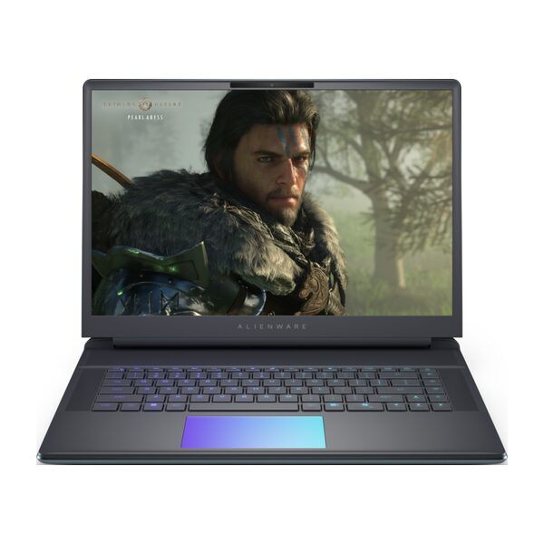
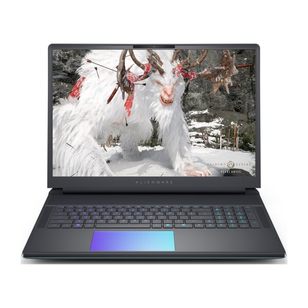
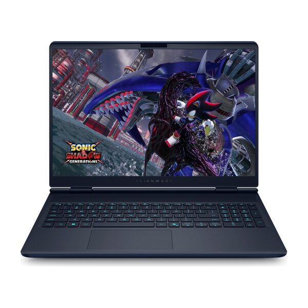

-
 Dell Gaming Alienware 16 Aurora AC16250 Core 7 240H (AC16250-C7H161W11II4050) RAM 16 GBSSD 1 TB 37.990.000đ5Đã bán 373 So sánh
Dell Gaming Alienware 16 Aurora AC16250 Core 7 240H (AC16250-C7H161W11II4050) RAM 16 GBSSD 1 TB 37.990.000đ5Đã bán 373 So sánh40.090.000đ-5% -
 Dell Gaming Alienware 16 Aurora AC16250 Core 7 240H (C7H161W11II5050) RAM 16 GBSSD 1 TB 40.990.000đ5Đã bán 238 So sánh
Dell Gaming Alienware 16 Aurora AC16250 Core 7 240H (C7H161W11II5050) RAM 16 GBSSD 1 TB 40.990.000đ5Đã bán 238 So sánh43.290.000đ-5% -
 Dell Gaming Alienware 16 Aurora AC16250 Core 5 210H (71072939) RAM 16 GBSSD 512 GB 33.990.000đ5Đã bán 943 So sánh
Dell Gaming Alienware 16 Aurora AC16250 Core 5 210H (71072939) RAM 16 GBSSD 512 GB 33.990.000đ5Đã bán 943 So sánh36.490.000đ-7% -
 Dell Gaming Alienware 16 Aurora AC16250 Core 7 240H (71072937) RAM 16 GBSSD 1 TB 44.990.000đ5Đã bán 58 So sánh
Dell Gaming Alienware 16 Aurora AC16250 Core 7 240H (71072937) RAM 16 GBSSD 1 TB 44.990.000đ5Đã bán 58 So sánh46.690.000đ-4% -

Dell Alienware 16 Area-51 AA16250 Hàng sắp về -

Dell Alienware 18 Area-51 AA18250 Hàng sắp về -

Dell Alienware 16X Aurora AC16251 Hàng sắp về
Thông tin dòng sản phẩm
Dell Alienware – Laptop Dell cấu hình mạnh mẽ, đậm chất game thủ
Dell Alienware là dòng laptop gaming cao cấp được phát triển bởi Dell, nổi bật với hiệu năng vượt trội và thiết kế đậm chất game thủ. Các sản phẩm Alienware luôn được đánh giá cao nhờ khả năng xử lý đồ họa mạnh mẽ, công nghệ tản nhiệt tiên tiến và chất lượng hoàn thiện xuất sắc. Với định hướng phục vụ nhu cầu chơi game chuyên nghiệp và làm việc sáng tạo, Alienware ngày càng khẳng định vị thế hàng đầu trong phân khúc laptop gaming hiệu năng cao.
1. Vì sao nên chọn laptop Dell Alienware cho game thủ và người làm đồ họa?
Dell Alienware mang đến trải nghiệm vượt trội cho game thủ nhờ cấu hình mạnh mẽ, tối ưu cho các tựa game cấu hình cao và phần mềm đồ họa chuyên nghiệp. Không chỉ đáp ứng nhu cầu giải trí, Alienware còn là công cụ đắc lực cho những người làm thiết kế 3D, dựng phim hay lập trình nhờ khả năng xử lý đa nhiệm mượt mà.
Bên cạnh hiệu năng, Dell Alienware còn gây ấn tượng với thiết kế cá tính, hệ thống tản nhiệt hiệu quả và màn hình chất lượng cao. Người dùng sẽ cảm nhận được sự khác biệt rõ rệt khi sử dụng Alienware so với các dòng laptop phổ thông, đặc biệt là về độ bền, khả năng nâng cấp và trải nghiệm tổng thể khi chơi game hoặc làm việc sáng tạo.
2. Những điểm nổi bật của Dell Alienware Gaming
Hiệu năng mạnh mẽ, xử lý mượt các tựa game nặng và đồ họa 3D
Dell Alienware được trang bị những dòng CPU và GPU hàng đầu thị trường, giúp chạy tốt các tựa game AAA như Cyberpunk 2077, Elden Ring hay Call of Duty ở mức thiết lập cao nhất. Nhờ khả năng xử lý đa lõi và tốc độ xung nhịp cao, laptop Alienware cũng đáp ứng tốt các nhu cầu dựng video 4K, thiết kế 3D, lập trình AI hay làm việc với dữ liệu lớn mà không bị giật lag.
Thiết kế hầm hố, phong cách nam tính và đậm chất gaming
Alienware sở hữu thiết kế riêng biệt với các đường cắt sắc nét, khung máy kim loại chắc chắn và logo hình người ngoài hành tinh phát sáng đặc trưng. Hệ thống đèn LED RGB đa vùng cho phép người dùng tùy chỉnh màu sắc theo sở thích cá nhân, tạo điểm nhấn nổi bật khi sử dụng tại các sự kiện gaming hoặc không gian làm việc sáng tạo.
Màn hình sắc nét, tần số quét cao, màu sắc sống động
Màn hình của Dell Alienware có độ sáng cao, độ phủ màu đạt chuẩn sRGB hoặc DCI-P3, phù hợp cho cả chơi game lẫn chỉnh sửa hình ảnh, video chuyên nghiệp. Tần số quét từ 165Hz đến 360Hz giúp hình ảnh hiển thị mượt mà, giảm hiện tượng nhòe, giật khi chơi các tựa game bắn súng, đua xe tốc độ cao.
Hệ thống tản nhiệt tối ưu, giữ hiệu suất ổn định
Công nghệ tản nhiệt buồng hơi và quạt kép của Alienware giúp phân tán nhiệt hiệu quả, giảm tiếng ồn và duy trì hiệu suất tối đa trong thời gian dài. Nhờ đó, máy không bị quá nhiệt, tránh hiện tượng tụt xung hoặc giảm hiệu năng khi chơi game hoặc làm việc liên tục.
Pin dung lượng lớn, đáp ứng nhu cầu di động
Pin dung lượng cao của Dell Alienware cho phép sử dụng liên tục từ 5 đến 8 giờ tùy vào tác vụ, phù hợp cho những ai thường xuyên di chuyển hoặc làm việc bên ngoài. So với các dòng laptop gaming khác, thời lượng pin của Alienware được đánh giá ổn định và ít bị chai sau thời gian dài sử dụng.
Bàn phím hành trình sâu, Touchpad mượt mà và nhạy
Bàn phím Alienware có hành trình phím sâu, cảm giác gõ rõ ràng, hỗ trợ anti-ghosting (nhận nhiều phím cùng lúc), rất phù hợp cho game thủ FPS hoặc MOBA. Touchpad phủ kính cho cảm giác vuốt chạm mượt mà, phản hồi nhanh, hỗ trợ đa điểm giúp thao tác nhanh chóng khi làm việc hoặc giải trí.
3. Bảng tổng hợp thông số kỹ thuật Dell Alienware Gaming
Dưới đây là bảng tổng hợp các thông số kỹ thuật tiêu biểu của các mẫu Dell Alienware Gaming phổ biến trên thị trường:
| Thông số | Cấu hình phổ biến | Ý nghĩa |
|---|---|---|
| CPU (Bộ xử lý) | Intel Core Ultra/ Core 7/9 H-series (ví dụ: Core 7-240H, Ultra 9 HX) | Quyết định tốc độ xử lý tổng thể, game & đa nhiệm nặng. |
| GPU (Đồ họa rời) | NVIDIA GeForce RTX 4060/4070/4080 (đời mới có 5070/5080 tùy cấu hình) | Chơi game AAA mượt, hỗ trợ Ray Tracing/DLSS. |
| RAM | 16–32–64GB DDR5 (2 khe SO-DIMM) | Đa nhiệm mượt, giữ khung hình ổn định khi chơi/game stream. |
| SSD (Lưu trữ) | 512GB – 2TB NVMe PCIe 4.0 (nhiều máy có 2 khe M.2) | Khởi động/tải game nhanh, đủ không gian cài đặt. |
| Màn hình | 16" 16:10 QHD+ (2560×1600) 165–240Hz; một số bản FHD+ 120–480Hz; có tuỳ chọn OLED ở dòng x16 | Hình ảnh sắc nét, chuyển động mượt để chơi game/đồ hoạ. |
| Cổng kết nối | USB-A/USB-C (có DP Alt), HDMI 2.1, RJ-45, audio; một số bản có Thunderbolt | Kết nối màn hình rời, mạng dây, ngoại vi gaming tiện lợi. |
| Pin | 86–90Wh | Dùng được vài giờ tác vụ nhẹ; nên cắm sạc khi chơi nặng. |
| Trọng lượng | ~2.5 – 3.3kg (tùy model và cấu hình) | Hiệu năng cao nhưng nặng hơn laptop mỏng nhẹ. |
4. Hướng dẫn chọn mua Dell Alienware Gaming
Mua laptop Dell Alienware theo nhu cầu sử dụng
Nếu bạn chủ yếu chơi game, nên ưu tiên các mẫu Alienware có GPU mạnh như RTX 3070, 3080 hoặc 4070 để đảm bảo hiệu năng tối ưu ở thiết lập đồ họa cao. Với nhu cầu thiết kế đồ họa, dựng phim hoặc làm việc đa tác vụ, lựa chọn dòng sở hữu CPU Core i9 hoặc Ryzen 9, RAM từ 32GB trở lên sẽ giúp xử lý mượt mà các phần mềm chuyên sâu.
Mua laptop Dell Alienware theo cấu hình và khả năng nâng cấp
Dell Alienware hỗ trợ nâng cấp RAM, SSD dễ dàng nên bạn có thể chọn phiên bản cấu hình cơ bản và nâng cấp dần khi có nhu cầu. Tuy nhiên, nên kiểm tra kỹ số khe RAM, SSD hỗ trợ tối đa để đảm bảo đáp ứng nhu cầu sử dụng lâu dài.
Mua laptop Dell Alienware theo ngân sách và kích thước màn hình
Người dùng có ngân sách hạn chế có thể chọn các mẫu Alienware x14, x15 với cấu hình vừa phải, vẫn đáp ứng tốt nhu cầu chơi game và làm việc. Nếu ưu tiên trải nghiệm hình ảnh rộng, các model 16 inch hoặc 17 inch là lựa chọn lý tưởng, phù hợp cho cả chơi game lẫn làm việc sáng tạo.
5. Bảng giá chi tiết các mẫu Dell Alienware Gaming
Dưới đây là bảng giá tham khảo các mẫu Dell Alienware Gaming mới nhất tại Thế Giới Di Động (cập nhật ngày 15/08/2025):
| Tên sản phẩm | Giá bán |
|---|---|
| Laptop Dell Gaming Alienware 16 Aurora AC16250 - 71072939 | 29.990.000 |
| Laptop Dell Gaming Alienware 16 Aurora AC16250 - C7H161W11II5050 | 38.290.000 |
| Laptop Dell Gaming Alienware 16 Aurora AC16250 - C7H321W11II5060 | 44.590.000 |
| Laptop Dell Gaming Alienware 16 Aurora AC16250 - 71072937 | 41.190.000 |
| Laptop Dell Gaming Alienware 16 Aurora AC16250 - C9H321W11II5070 | 66.990.000 |
6. Câu hỏi thường gặp
Dell Alienware có phù hợp cho game AAA không?
Dell Alienware được thiết kế để xử lý mượt mà các tựa game AAA mới nhất trên thị trường, nhờ cấu hình mạnh mẽ và card đồ họa rời cao cấp. Người dùng hoàn toàn có thể chơi game ở thiết lập đồ họa Ultra, tận hưởng hiệu ứng hình ảnh chân thực và tốc độ khung hình cao.
Khác biệt giữa các dòng Alienware là gì?
Các dòng Alienware như x14, x15, x17, m16 khác nhau về kích thước màn hình, cấu hình phần cứng và thiết kế tổng thể. Dòng x14 và x15 ưu tiên tính di động, mỏng nhẹ; trong khi x17 và m16 tập trung vào hiệu năng tối đa, màn hình lớn phù hợp cho trải nghiệm gaming đỉnh cao.
Có thể nâng cấp RAM và SSD không?
Hầu hết các mẫu Dell Alienware đều hỗ trợ nâng cấp RAM và SSD dễ dàng, giúp người dùng chủ động mở rộng dung lượng khi cần thiết. Tuy nhiên, một số mẫu siêu mỏng như x14 có thể hạn chế về số khe cắm, nên cần kiểm tra kỹ trước khi mua.
Thời lượng pin khi chơi game liên tục là bao lâu?
Khi chơi game liên tục ở hiệu năng cao, pin của Dell Alienware thường duy trì từ 2 đến 3 giờ tùy cấu hình và thiết lập đồ họa. Nếu sử dụng cho các tác vụ nhẹ như lướt web, làm việc văn phòng, thời lượng pin có thể kéo dài 5–8 giờ.
Thế Giới Di Động có hỗ trợ trả góp 0% không?
Thế Giới Di Động hỗ trợ trả góp 0% lãi suất cho khách hàng mua Dell Alienware qua thẻ tín dụng hoặc công ty tài chính liên kết. Thủ tục đơn giản, xét duyệt nhanh, giúp bạn dễ dàng sở hữu laptop gaming cao cấp mà không lo áp lực tài chính.
7. Mua Dell Alienware Gaming chính hãng tại Thế Giới Di Động
Laptop Dell chính hãng luôn được Thế Giới Di Động phân phối với đầy đủ giấy tờ và chế độ bảo hành minh bạch. Khi mua tại đây, khách hàng hoàn toàn yên tâm về chất lượng sản phẩm và dịch vụ hậu mãi.
- 100% sản phẩm chính hãng, nhập khẩu trực tiếp từ Dell.
- Chính sách đổi trả rõ ràng, dễ dàng, bảo vệ quyền lợi khách hàng tối đa.
- Hệ thống cửa hàng phủ khắp toàn quốc, thuận tiện mua sắm trực tiếp hoặc online.
- Nhiều chương trình khuyến mãi, giảm giá, tặng quà hấp dẫn cho từng model.
Dell Alienware là lựa chọn hàng đầu cho game thủ và người làm đồ họa nhờ hiệu năng mạnh mẽ, thiết kế đậm chất gaming và nhiều tính năng cao cấp. Với chính sách bảo hành minh bạch, ưu đãi hấp dẫn và hỗ trợ trả góp 0% tại Thế Giới Di Động, việc sở hữu laptop Alienware chưa bao giờ dễ dàng hơn. Hãy trải nghiệm sức mạnh và phong cách khác biệt mà Dell Alienware mang lại cho công việc và giải trí của bạn. Mua ngay tại Thegioididong!